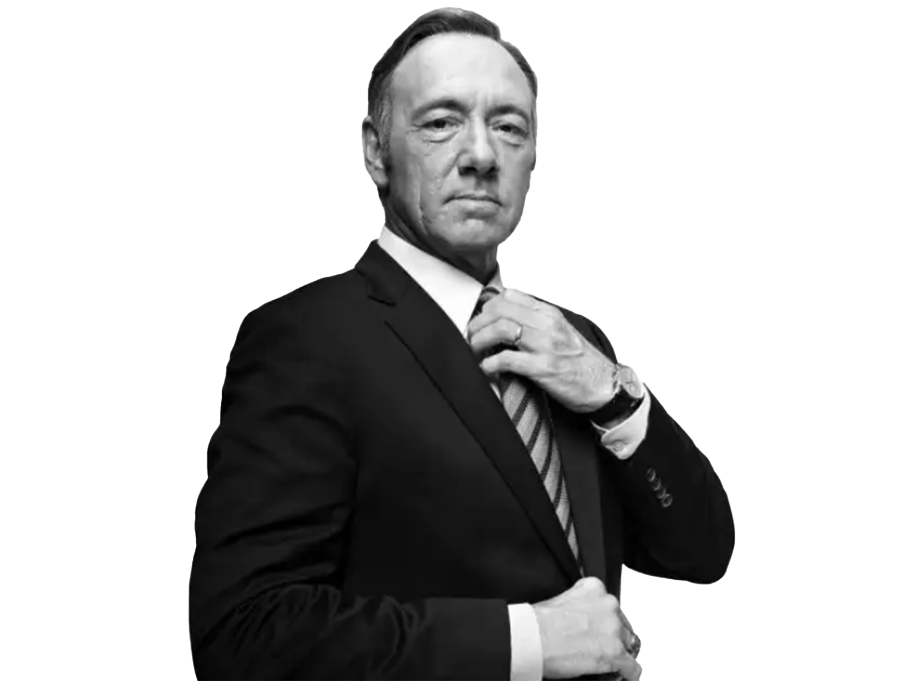
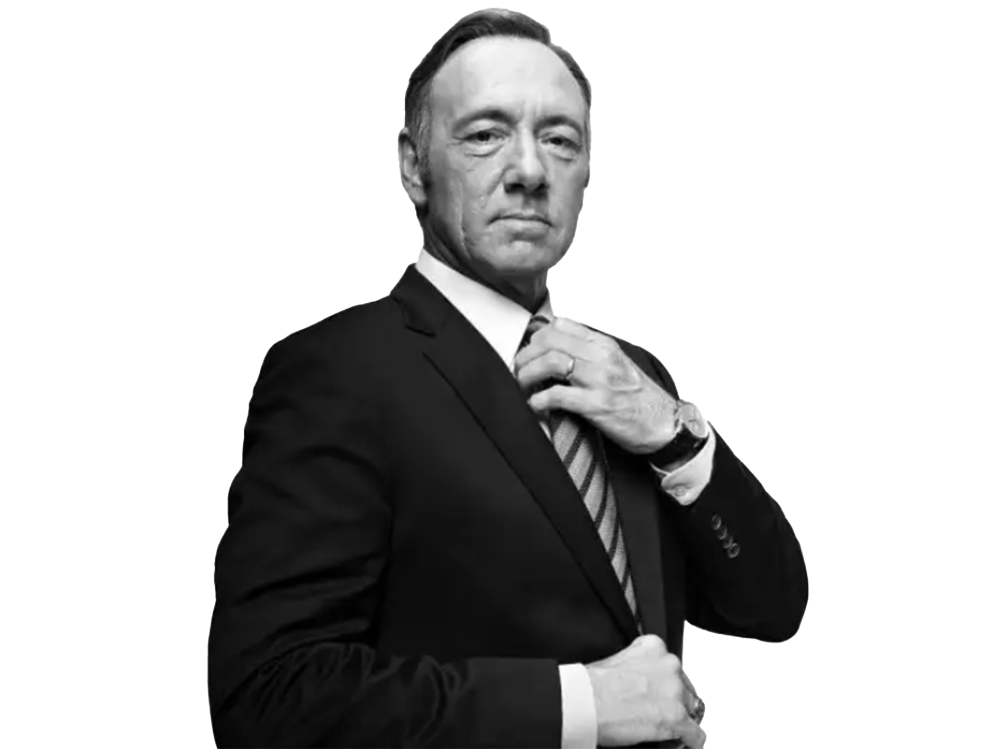
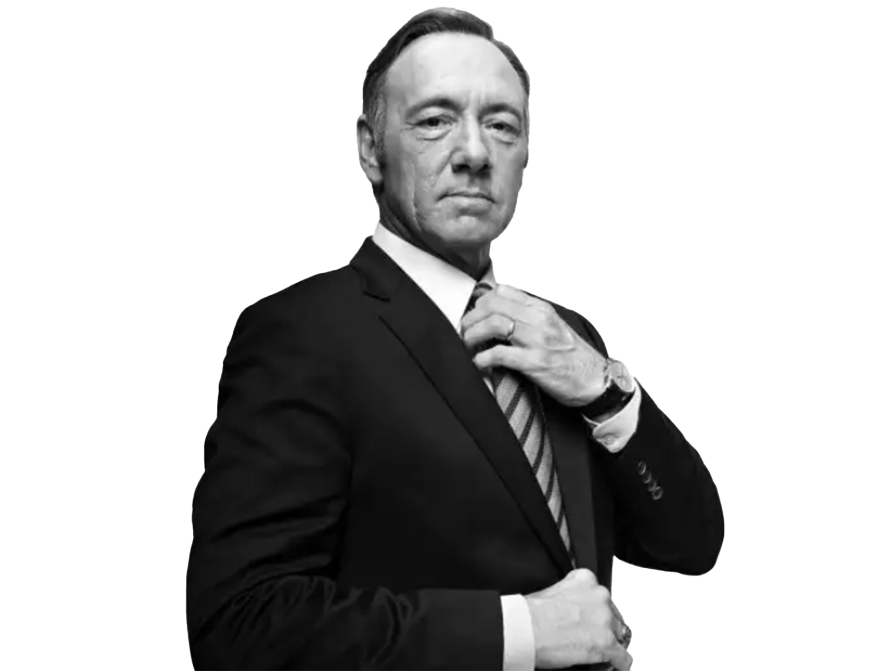
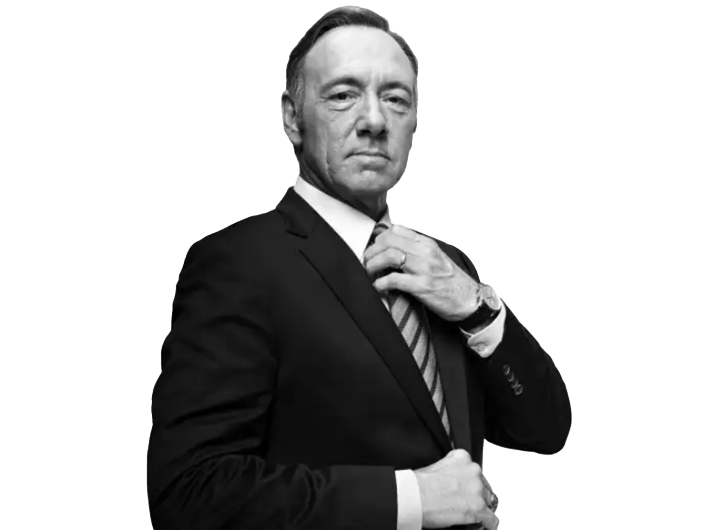
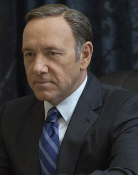
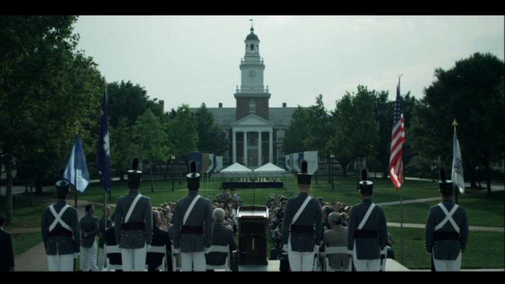

Francis Joseph “Frank” Underwood (November 5, 1959 - May 2017) was an American politician and statesman who served as the 46th President of the United States from 2014 to 2017. A member of the Democratic Party, he previously served as the 49th Vice President of the United States under Garrett Walker from 2013 to 2014, and formerly served as the majority whip for the United States House of Representatives between 2005 and 2013, serving South Carolina's 5th district. After his presidency, Underwood served as the First Gentleman of the United States under his wife Claire Hale Underwood from March 2017 until his death in May 2017.
| Frank Underwood |
|---|
|  |
| Age: 57 |
| Date of birth: November 5, 1959 |
| Birthplace: Gaffney, Cherokee County, South Carolina, United States |
| Date of death: May 2017 |
| Place of death: 1600 Pennsylvania Ave NW |
| Cause of death: Poisoned via medication |
| Nationality: American |
| Political party: Democratic |
| Religion: Southern Baptist (de iure) Atheist (de facto) |
| Profession: House Majority Whip (2005–2013) 49th Vice President of the United States (2013–2014) 46th President of the United States (2014–2017) First Gentleman of the United States (03.2017 - 05.2017) |
| Affiliation: United States House of Representatives (1991–2013) |
| Education: The Sentinel, Harvard Law School |
| Marital status: Married to Claire Underwood |
| Children: None |
Underwood was from Gaffney, South Carolina, and had an undistinguished background. He graduated from The Sentinel in 1980 and; subsequently, Harvard Law School in 1984, and married Claire in 1987. Underwood was elected to the U.S. House of Representatives in 1990 as a Democratic representative for the 5th Congressional District of South Carolina, being sworn in during January 1991. He won another 11 consecutive elections, winning his final term in 2012. He was elected Whip for the Democratic Party in 2005, serving as House Majority Whip between 2005 and 2013.
Underwood was passed over for an appointment as United States Secretary of State even though he had been promised the position after ensuring the election of Walker as President, leading to Underwood secretly plotting against him. Underwood uses his position as House Whip to seek retribution, and eventually manipulated his way to becoming the 49th Vice President in 2013 and the 46th President of the United States in 2014, becoming the first president since Gerald Ford to have occupied the offices of Vice President and President of the United States without having been elected to either post.
In his first term as president, Underwood initiated the landmark America Works jobs program, which lasted for several months until it was defunded by Congress. Underwood also negotiated with Russian President Viktor Petrov to relinquish his hold on the Jordan Valley, by negotiating Claire's resignation as U.N. Ambassador. Underwood has also passed a Gun Control Bill, which was inspired after his assassination attempt in March 2016. Underwood and Claire ran against Republican nominee Will Conway and his running mate Ted Brockhart in the 2016 presidential election. Although neither candidate received a majority of electoral votes, Underwood would go on to win new elections in Ohio, which won him the election, becoming the first Democrat to lose the popular vote but win the electoral college.
Underwood was sworn in to his second term on February 17, 2017. Underwood's short-lived second term, however, was riddled with scandal. He and his administration was investigated by the Declaration of War committee, which led to his resignation from the presidency on March 15, 2017. He was succeeded by his wife and successor, Claire Hale, with Underwood becoming the First Gentleman and continuing to live in the White House. He died in May 2017 after being poisoned by his right-hand man Doug Stamper, and was buried in South Carolina. Scholars and historians rank Underwood as one of the worst presidents in American history.
Underwood was an only child born on November 5th, 1959. His father was a peach farmer in Gaffney, South Carolina, who died of a heart attack at the age of 43. Underwood has stated that he and his father had nothing in common whatsoever, and upon his father's death, he felt neither regret nor remorse. He also speaks about his father's cowardice, weak personality and drunken behavior.
Raised in impoverished circumstances, he found his hometown suffocating at the time.
The Sentinel
Underwood attended military college at "The Sentinel", based on The Citadel in Charleston, South Carolina. He began attending the academy just after Jimmy Carter had been elected president in 1976. In his senior year, his grades suffered when he volunteered for a U.S. Senate campaign in the fall 1980 and was nearly expelled from the military college. Despite his poor grades, Underwood was accepted and graduated from Harvard Law School in 1984. He had a sexual and romantic relationship while in military college with another cadet, Tim Corbet.
On September 3, 1987, Underwood married Claire Hale. Although Claire was interested in having children, Underwood soon decided that it would be cruel to bring a child into a world of pain.
Claire became pregnant during Underwood's early campaigning years, but the child was aborted to help further Underwood's political career. In 2014, Claire declares in a TV interview that she had the abortion because she was impregnated from being raped by her boyfriend early in college, a man who later became a decorated general; this, however, is a lie, as the rape did not result in pregnancy.